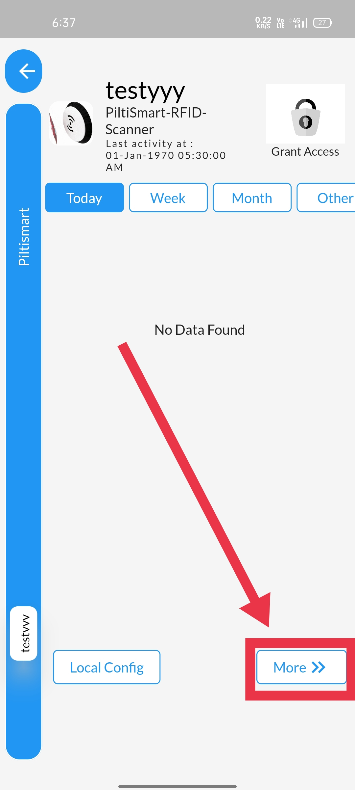
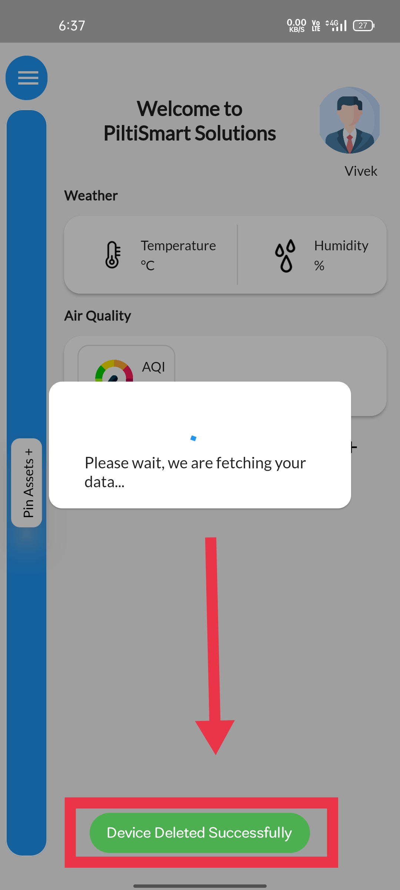

STEP 1To view the Device-relation Tree, Click on the Dashboard. |
 |
STEP 2Select the Device-Relation Tree option available. |
 |
STEP 3Click on the navigation buttion at the right, & Available in the device tab itself. |
 |
STEP 4Click on the more option available in the right bottom corner,&To navigate the device options. |
|  |
STEP 5Click on the "device actions" option displayed in the side panel&To access the options available. |
 |
STEP 6
Click on the "remove device" to delete the device. |
 |
STEP 7Click on Yes if you wish to delete the device. |
 |
STEP 8A device(mobile phone) Authentication tab will appear,& asking either your bio-metric(fingerprint) &or the passcode/pincode/pattern (if there any). |
 |
STEP 9After the verification, Confirmation message will be displayed &informing that device is deleted sucessfully. |
|  |